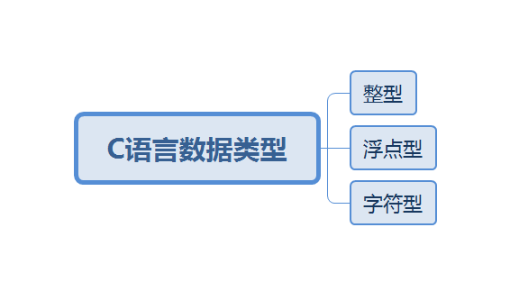
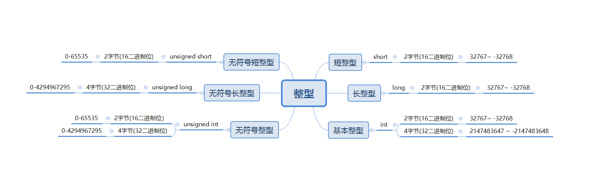
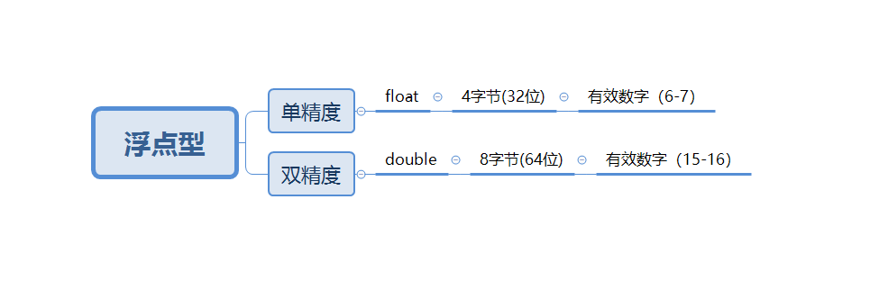
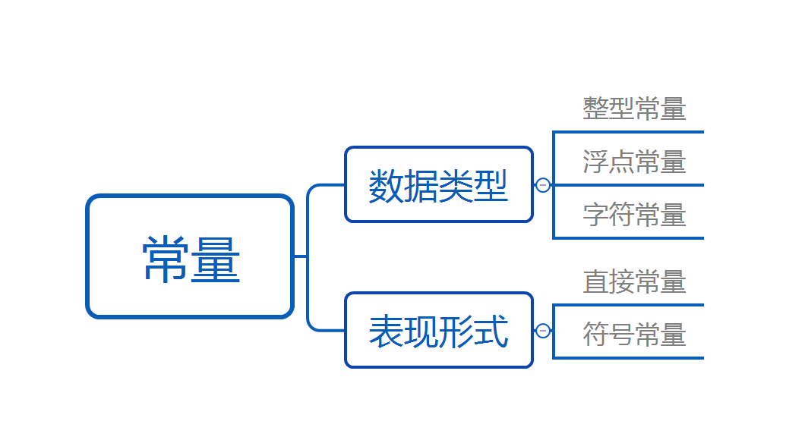
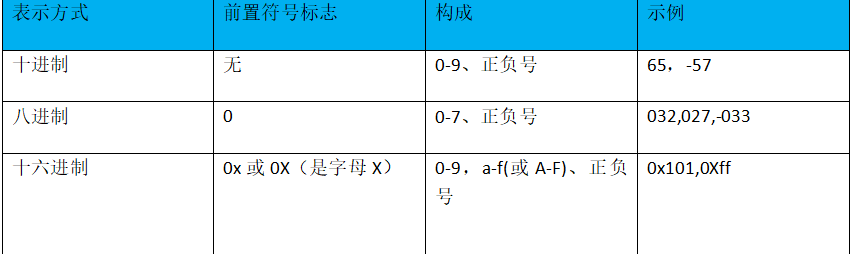
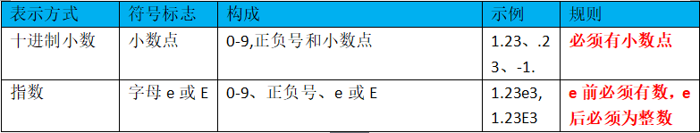
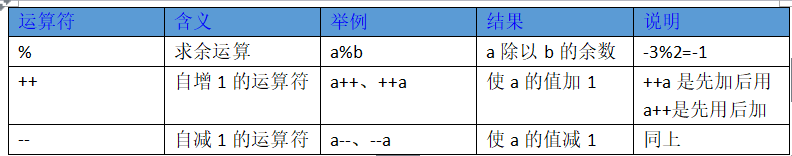

比赛完美结束，成绩还不错。决定回去上上课，然后今天上课老师讲C语言。发现今天是实验课，没学什么新东西，一直在敲代码，理解代码。今天先总结一下今天的实验代码，然后再写第二章总结，最后再写一个今天刚刚学到的进制转换的知识。
实验1：
这个是一个循环结构while循环的实验
1 |
|
最后输出的结果是：12
实验2：
这是一个用来筛选一段字符串当中，存在的数字、字母、空格和特殊符号个数的程序，主要用的就是if else的判断语句来实现的。但是要注意大括号的问题。
这里说一下if else的大括号的结构：
1 | if（判断条件） |
1 |
|
实验3：
这个就挺有意思的了，猴子吃桃的问题。那个实验吧的第一个编程题目。但是可能跟老师的题目数据有所差距，但是实现出来的都是一样的。
这个得用到逆向的思想来去做。因为很多人想不通这个问题，包括我，也是卡了很久很久才想出来。（我太垃圾了）
最后基本思路就是：
首先题目说了，小猴子摘了一堆桃子(设为变量：sum),然后就是他每天都是吃总数的一半多一个。所以可以列式子。
每天的总数就是sum = (sum-1) / 2
最后题目说了，他在第十天的时候吃的只剩下一个桃子了，让咱们求第一天的。
所以我们可以去逆向一下这个公式。sum = ((第10天剩下桃子的总数)+ 1 ) * 2 ;
OK,这样一来我们的公式就得到了。那么跟天数的关系呢？我们可以手算一下，咱们将第十天的结果带进去的和就是第九天的。也就是说，一天循环一次。
之前写了for循环的，老师可能还没讲到哪里，所以我就用今天学的while循环来实现这个问题。
1 |
|
开始我们的正题：
程序设计基础知识
2.1 数据表示
2.1.1数据类型
概念：计算机处理数据信息时，需要知道数据到底是什么类型的，以便分配合适的空间，并且按照相应的规则进行操作。因此，我们首先需要对数据进行明确的类型说明
它们对应的符号，常常被用作类型标识符。

整数类型又分为：

1.有符号数就是用最高位表示符号（正或负），其余位表示数值大小，无符号数则所有位都用于表示数的大小
2.有符号数和无符号数是针对二进制来讲的。
3.有符号数用最高位作为符号位，“0”代表“+”，“1”代表“-”；其余数位用作数值位，代表数值。
比如：
0011 表示 +3；1011 表示 -3。无符号数全部二进制均代表数值，没有符号位。即第一个”0”或”1”不表示正负。
比如：
0011 表示 3；1011 表示 11。C支持所有整形数据类型的有符号数和无符号数运算。尽管C标准并没有指定某种有符号数的表示，但是几乎所有的机器都使用二进制补码。
浮点类型：

暂时可以理解为小数。
字符型：
字符型数据涵盖了ASCII码字符集中的每一个字符，包括可直接显示的字符和32个控制字符，见附录A。
这里说一下ASCII码的理解，具体概念不说了。就说下关键的
ASCII码的可见字符有95个，也就是32-126。
字符型用char表示，占储存空间1个字节（8个二进制位），实际上储存的时该字符所对应的ASCII码的值，经常与整型混用，如’A’+1=’B’
如果背不住字符对应的ascii码的值，可以用这个：
1 |
|
2.1.2 常量

实型和整型是不同的类型，它们在内存中的存储方式是不同的。
1.整型常量
整型常量有：十进制、十六进制、八进制三种表示方式。

整型常量默认的都是基本整型，可以在整型常量后加小写字母或者大写字母L得到相应的长整型常量。例如： 0x10100LL
2.实型常量
浮点型常量有十进制小数和指数形式两种方式
实型有单精度和双精度两种类型

浮点型默认为双精度
3.字符型常量
这个字符型常量吧，就是例如这样的 ‘A’。字符常量还包括32个控制字符。通常控制字符及C语言中被用作特殊含义的字符用转义字符表示。
表示转义字符的时候以反斜杠“ \ ”作为标志符号。
字符型常量在内存中占1个字节。
重点：
字符型常量中单引号只能包括单字符，多字符要使用双引号*‘65’不算,在单引号之间只能有一个字符,如果想用ASCII码表示,就不要引号了
比如
char c=65;这样是合法的
char c=’6’;这样也合法
char c=”65”;这是合法的字符串**
4.字符串常量
比如printf(“helloworld”);中间的hellworld就是字符串常量。
字符串储存时，每个字符占一个字节。并且在字符串结尾的时候，会加上一个字符串结束的标志’\0’,因此字符串的存储长度比字符串的字符个数多1。
2.符号常量
符号常量是指用符号代表某个常量
符号常使用预编译处理中的“宏定义”命令定义，其格式如下：
1 |
这样做的好处就是，随时可以修改常量的值。
符号标识符通常大写，以便和其他标识符相区别。另外，宏定义命令和头文件包含命令一样都属于编译于吹，需要写在程序开头位置。
2.1.3 变量
简单的理解，就是会程序的变化而变化的量。
变量必须先定义，后使用
1 | 类型标识符 变量名，变量名1，......,变量名n； |
类型标识符是变量的数据类型，其符号表示可参照之前说的2.1.1当中的有关数据类型的描述。
变量名一定要合法
例如：
1 | float r,area; |
2.2.1 数据操做
这个章节我觉得没什么好说的，因为运算符比较符合我们人的正常逻辑。所以涉及到了一个运算符优先级的问题。（附录B）
通常我们知道，先乘除后加减，有括号的先算括号里面的。
这里就说一下++和–这个吧。

由算数运算符构成的表达式成为算术表达式。
当我们运算比较复杂的算术表达式的时候，需要用到很多数学函数，这个时候有一个好用的模块可以帮助我们，math.h
用法就是同样写在编译预处理的位置：
1 |
math.h同样起到了和stdio.h一样的作用。里面储存了很多数学的库函数。具体用法